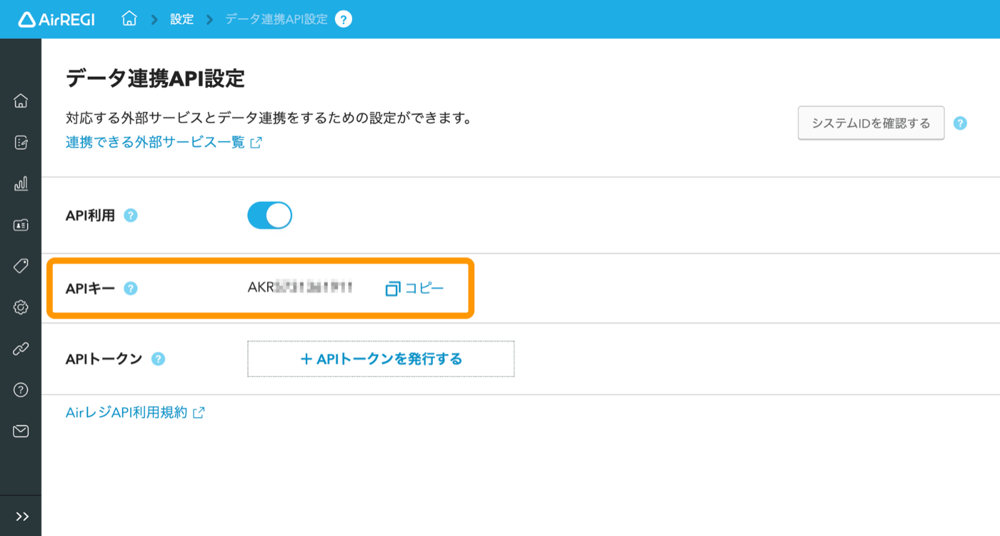
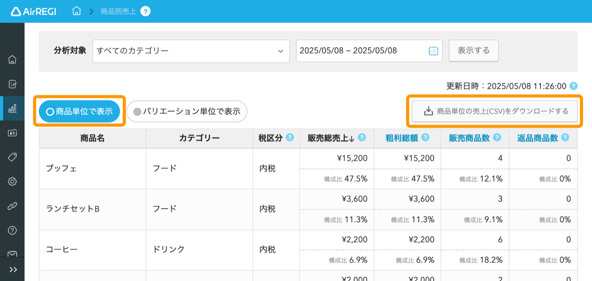
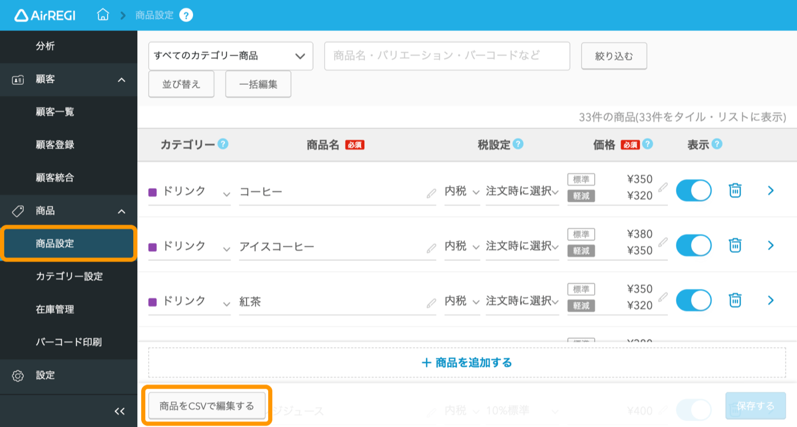

2026年7月4日時点の公式仕様確認
売上データはAPIで。閉店後に自動収集。
毎日の運用でCSVを出す前提は外します。Airレジのデータ連携APIで取引情報・入出金情報・精算情報を夜間に取得し、在庫、粗利、税理士資料へ自動でつなげます。
最初の結論
毎日の作業は、自動で回す。
売上を自動取得
閉店後にAirレジAPIから取引情報、入出金情報、精算情報を取得します。
在庫と粗利へ反映
売れた数量を在庫に反映し、仕入原価、税率、包材費から粗利を出します。
商品設定は初期だけ
商品名、JAN、税率、SKU対応は導入時と変更時に確認。日々の売上回収には使いません。
Airレジ公式画面で見る
毎日触る画面を、減らす。

API設定
最初に一度つなぐ
店舗ごとにAPI利用をオン。認証情報をクマちゃん側へ設定し、夜間自動取得の準備をします。

確認用
手動CSVは通常使わない
商品別売上画面は確認用。日々の売上回収はAPI自動取得に寄せ、CSVダウンロード作業をなくします。

初期設定
商品マスターの確認用
商品名、JAN、税率、売価の初期確認や一括変更時だけ使います。毎日の運用作業ではありません。
夜の自動処理として説明する
閉店後は、APIが回収。
当日の会計と精算を確定。ここだけ店舗側の通常作業です。
取引情報、入出金情報、精算情報をクマちゃんが自動取得します。
小分け原価、税率、包材費を反映して利益を確認します。
イベント、天気、販売実績から仕入れ候補を出します。
仕入、売上、棚卸、証憑を月次で見やすく整理します。
クマちゃん側の設計
Airレジは販売、クマちゃんは原価と在庫。
Airレジから受ける
- 商品名、売価、税率
- JAN・バーコード
- 取引情報、売上データ
- 入出金情報、精算情報
クマちゃんで持つ
- コストコ商品コード
- 仕入原価、小分け原価
- 自社SKU、Airレジ商品対応
- 棚卸、粗利、税理士資料
まず決めるルール
- JANを必ず登録する商品
- セット・小分け商品のSKU
- 軽減税率と通常税率の扱い
- API取得を何時に回すか
API連携の扱い
毎日のCSV作業はなくせる。
Airレジのデータ連携APIは、取引情報、入出金情報、精算情報の連携が対象です。閉店後に自動取得すれば、毎日の売上CSVダウンロード作業は不要になります。
公式確認元
確認すべき公式ページ。
Next Action
まずはAPIで、1日分を自動取得。
閉店後の取引情報、入出金情報、精算情報を1日分取得できれば、在庫、粗利、税理士資料までの自動化精度を確認できます。
クマちゃんシステムへ戻る